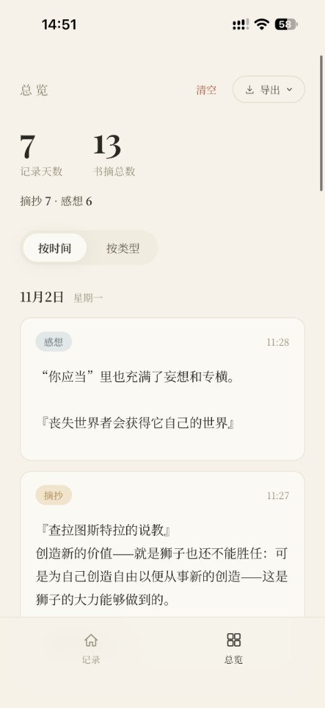
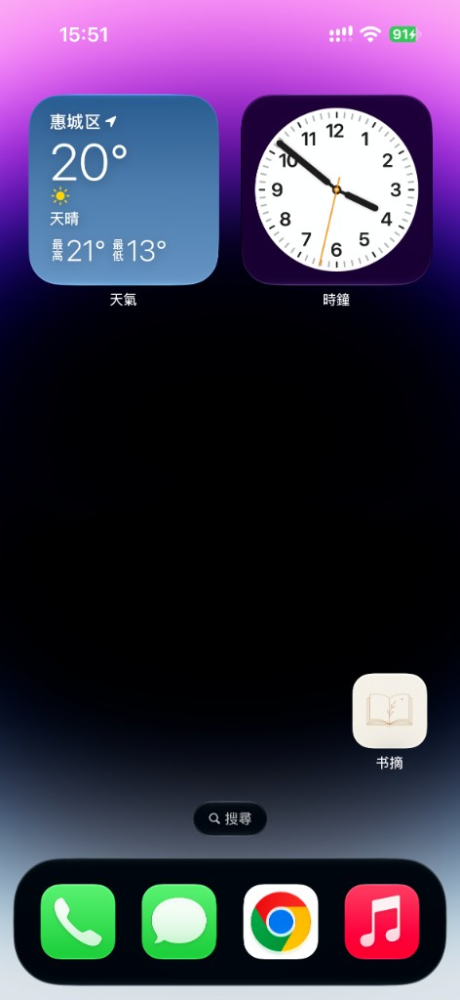
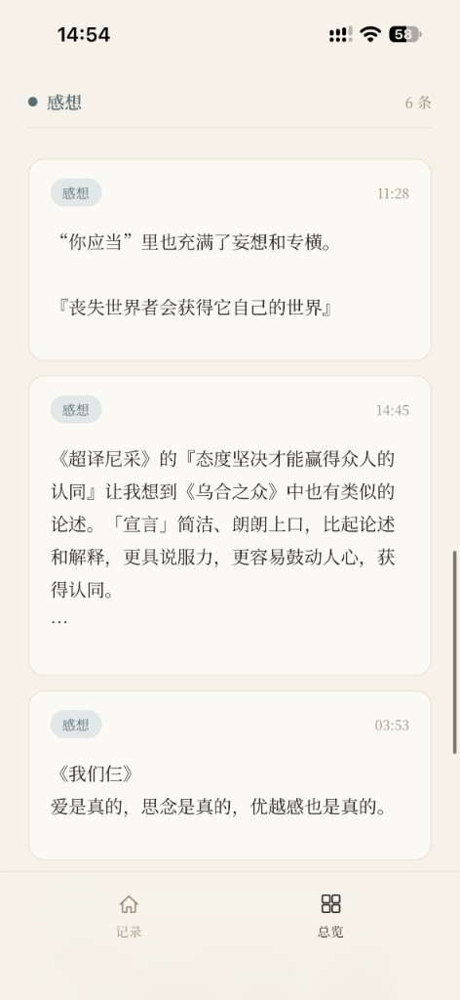
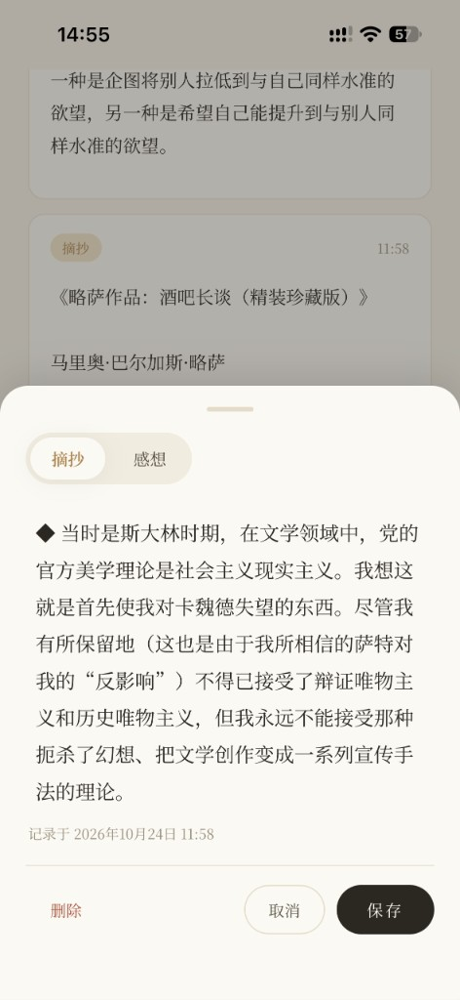
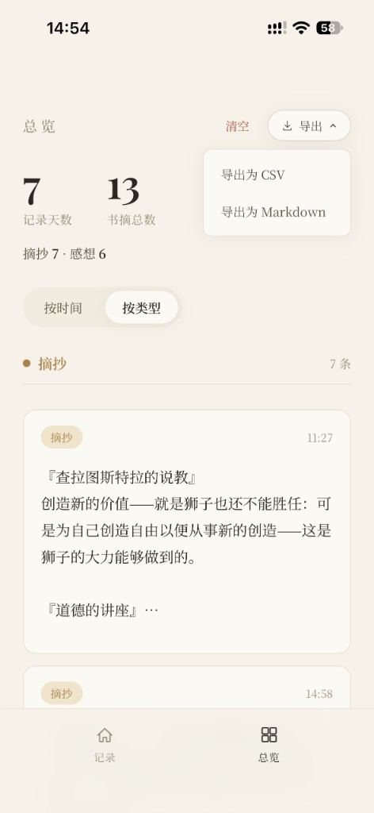

类型只留两个
不建书库，不打标签。需要分开的是「书说的」和「我说的」。
03 / PRODUCT PRACTICE
网页应用 · 可离线
从写下到找回，不要求建书、选笔记本或打标签。

电子书跳转注释打断思路，手机看书总被消息带跑；用豆瓣或笔记软件记摘抄，功能太多、入口太重，想记一句话要先选书名、打标签，打开还容易分心。于是想做一个“打开→写→关掉”的书摘工具：不用选书名、不用打标签，按时间往下记，回头按时间翻。像随身带着以前的摘抄本，但不用带本子。
将工具添加至【主屏幕】，点击直接进入记录页面。区分【摘抄】与【感想】。选定分类即可开始记录。

总览页面按时间自动记录，也可以切换类型查看历史记录。顶部为用户统计记录的天数、总条数和不同类型的数量。
按时间，回看每天读了什么、想了什么、记录了什么；按类型，回顾原文引用和感想素材，方便后期整理思路和写作。

格式可选CSV和Markdown，方便导入Notion或Obsidian等笔记软件。移动端优先调起系统分享。


不建书库，不打标签。需要分开的是「书说的」和「我说的」。
统计、导出、清空都在总览。打开后的第一眼是日期和输入框。管理是记完以后的事。
不设置账号，数据在本地浏览器，后期可主动导出，连接到常用知识库，如Notion和Obsidian。
网页负责记录、回看和修改。数据写在浏览器的 localStorage 里，不经过账号，也不上传。Service Worker 只把页面缓存下来，让离线仍能打开，不负责同步。
真实工具体验。内容写在当前浏览器，刷新后仍在。